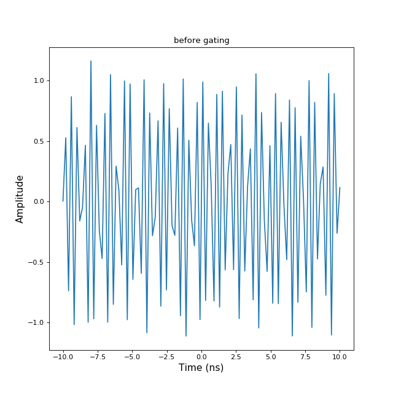
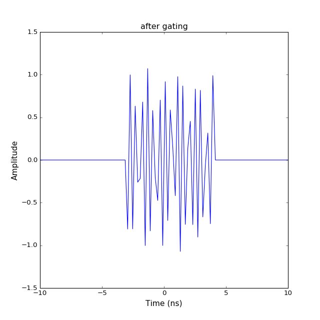

Bsignal¶
-
class
pylayers.signal.bsignal.Bsignal(x=array([], dtype=float64), y=array([], dtype=float64), label=[])[source]¶ Bases:
pylayers.util.project.PyLayersSignal with an embedded time base
This class gathers a 1D signal and its axis indexation.
The x base is not necessarily uniform
x has 1 axis
x and the last axes of y have the same length
By construction shape(y)[-1] :=len(x), len(x) takes priority in case of observed conflict
Methods
append(bs)append bs to Bsignal cformat(**kwargs)complex format extract(u)extract a subset of signal from index flatteny([yrange, reversible])flatten y array gating(xmin, xmax)gating between xmin and xmax help([letter, typ])generic help imshow(**kwargs)imshow of y matrix len()returm length of x axis load(filename)load a Bsignal from a Matlab File max()max value of the signal (module if complex) mean()mean value of the signal min()min value of the signal (module if complex) plot(**kwargs)plot signal Bsignal save(filename)save Bsignal in Matlab File Format setx(x)setx : set x vector sety(fun)sety : set y vector stem(**kwargs)stem display step([color])plot steps display Methods Summary
append(bs)append bs to Bsignal cformat(**kwargs)complex format extract(u)extract a subset of signal from index flatteny([yrange, reversible])flatten y array gating(xmin, xmax)gating between xmin and xmax imshow(**kwargs)imshow of y matrix len()returm length of x axis load(filename)load a Bsignal from a Matlab File max()max value of the signal (module if complex) mean()mean value of the signal min()min value of the signal (module if complex) plot(**kwargs)plot signal Bsignal save(filename)save Bsignal in Matlab File Format setx(x)setx : set x vector sety(fun)sety : set y vector stem(**kwargs)stem display step([color])plot steps display Methods Documentation
-
cformat(**kwargs)[source]¶ complex format
Parameters: sax : list
selected output axis from y default [0,1] typ : string ‘m’ : modulus ‘v’ : value ‘l10’ : dB (10 log10) ‘l20’ : dB (20 log10) ‘d’ : phase degrees ‘r’ : phase radians ‘du’ : phase degrees unwrap ‘ru’ : phase radians unwrap ‘gdn’ : group delay (ns) ‘gdm’ : group distance (m) ‘re’ : real part ‘im’ : imaginary part
sel : list of ndarray()
data selection along selected axis, all the axis void default [[],[]]
ik : fixed axis value default (0)
Returns: a0 : first data axis
this axis can be self.x or not
a1 : second data axis
dt : data
ylabels : string
label for the selected complex data format
Notes
This function returns 2 arrays x and y and the corresponding labels Convention : the last axis of y has same dimension as x y can have an arbitrary number of axis i.e a MIMO channel matrix could be x : f and y : t x r x f
Examples
>>> import numpy as np >>> S = Bsignal() >>> x = np.arange(100) >>> y = np.arange(400).reshape(2,2,100)+1j*np.arange(400).reshape(2,2,100) >>> S.x = x >>> S.y = y >>> S.cformat() (array([[-240. , 43.01029996], [ 49.03089987, 52.55272505]]), 'Magnitude (dB)')
-
extract(u)[source]¶ extract a subset of signal from index
Parameters: u : np.array Returns: O : Usignal Examples
>>> from pylayers.signal.bsignal import * >>> import numpy as np >>> x = np.arange(0,1,0.01) >>> y = np.sin(2*np.pi*x) >>> s = Bsignal(x,y) >>> su = s.extract(np.arange(4,20)) >>> f,a = s.plot() >>> f,a = su.plot()
-
flatteny(yrange=[], reversible=False)[source]¶ flatten y array
Parameters: yrange : array of y index values to be flattenned
reversible : boolean
if True the sum is place in object member yf else y is smashed
-
gating(xmin, xmax)[source]¶ gating between xmin and xmax
Parameters: xmin : float
xmax : float
Returns: nothing self is modified
Warning
When a gating is applied the removed information is lost
Examples
>>> import numpy as np >>> import matplotlib.pyplot as plt >>> from pylayers.signal.bsignal import * >>> x = np.linspace(-10,10,100) >>> y = np.sin(2*np.pi*12*x)+np.random.normal(0,0.1,len(x)) >>> s = TUsignal(x,y) >>> fig,ax = s.plot(typ=['v']) >>> txt1 = plt.title('before gating') >>> plt.show()(Source code, png, hires.png, pdf)
>>> s.gating(-3,4) >>> fig,ax=s.plot(typ=['v']) >>> txt2 = plt.title('after gating') >>> plt.show()
-
imshow(**kwargs)[source]¶ imshow of y matrix
Parameters: interpolation : string
‘none’|’nearest’|’bilinear’
cmap : colormap
plt.cm.BrBG
aspect : string
‘auto’ (default) ,’equal’,’scalar’
function : string
{‘imshow’|’pcolormesh’}
typ : string
‘l20’,’l10’
vmin : min value
vmax : max value
sax : list
selct axe
bindex
Examples
>>> f = np.arange(100) >>> y = np.random.randn(50,100)+1j*np.random.randn(50,100) >>> F = FUsignal(f,y)
-
plot(**kwargs)[source]¶ plot signal Bsignal
Parameters: iy : index of the waveform to plot (-1 = all)
col : string
default ‘black’
vline : ndarray
hline : ndarray
unit1 : string
default ‘V’
unit2 : string
default ‘V’
xmin : float
xmax : float
ax : axes instance or []
dB : boolean
default False
dist : boolean
default False
display : boolean
default True
logx : boolean
defaut False
logy : boolean
default False
Returns: fig : figure
ax : np.array of axes
See also
pylayers.util.plotutil.mulcplot
-
save(filename)[source]¶ save Bsignal in Matlab File Format
Parameters: filename : string See also
Examples
>>> from pylayers.signal.bsignal import * >>> import matplotlib.pyplot as plt >>> e = TUsignal() >>> e.EnImpulse(feGHz=100) >>> fig,ax = e.plot(typ=['v']) >>> tit1 = plt.title('original waveform') >>> e.save('impulse.mat') >>> del e >>> h = TUsignal() >>> h.load('impulse.mat') >>> fig,ax = h.plot(typ=['v']) >>> tit2 = plt.title('retrieved waveform')
-
setx(x)[source]¶ setx : set x vector
Parameters: x : np.array Notes
y is set to a zero vector
Use __set__ instead
-


{kind=link}
{kind=link}
{kind=link}
{kind=link}
{kind=link}
{kind=link}
{kind=link}
{kind=link}
{kind=link}
{kind=link}
{kind=link}
{kind=link}
{kind=link}
{kind=link}